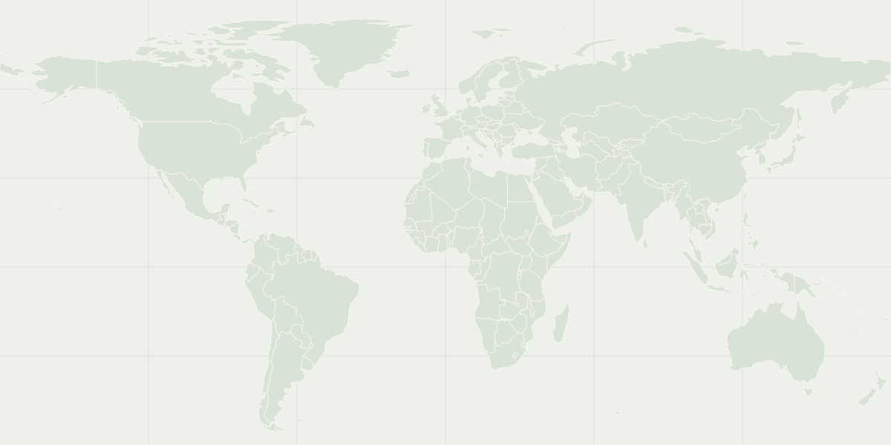

/ A SIDE OF ME
Your side
A FEW MOMENTS
From behind the camera
Two frames from October and November 2018.
PLACES THAT STAY WITH ME
Where I’ve been
Marked by city, without pinpointing exact addresses.

Share the cities or countries you’ve visited, and I’ll mark them here.
Map outlines: Natural Earth
WORDS THAT KEPT WALKING
A few things I’ve written
Lines that started as captions and carried on past the photograph.